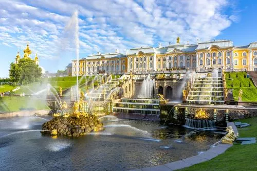

На метеоре до Петергофа

История Петергофа
Дата постройки: 1714 - 1723 гг.
Архитекторы: И. Браунштейн, Ж. Б. Леблон, Н. Микетти, Ф. Растрелли, А. Н. Воронихин, А. И. Штакеншнейдер. Садовые мастера: Л. Гарнихфельт, А. Борисов, Б. Фок, Т. Тимофеев.
Петергоф, на протяжении 200 лет бывший парадной летней резиденцией императоров, неразрывно связан с нашей историей. Приморский парадиз строился как грандиозный триумфальный памятник, прославляющий величие России, завоевавшей в ходе Северной войны столь необходимый и желанный выход к Балтийскому морю.
Первое документальное упоминание Петергофа относится к 1705 году, когда он на голландский манер назывался «Питергоф» — «Петров двор». Проект по праву можно назвать детищем самого Петра I — сохранилось более десяти его собственноручных рисунков, относящихся к Петергофу, и ещё большее количество чертежей с исправлениями и пометками. Даже после смерти императора, на протяжении полутора веков преображая летнюю резиденцию, архитекторы не только бережно сохраняли, но и продолжали воплощать все основные замыслы царя-реформатора.
Строительство резиденции, не уступающей по красоте и роскоши лучшим резиденциям европейских монархов, в том числе французскому Версалю, началось в 1714 году. Уже в августе 1723 года состоялся первый показ резиденции императором Петром I иностранным послам, причем к этому времени был распланирован Нижний парк, прорыт Морской канал, действовала часть фонтанов, были отделаны верхние палаты, а также построены дворцы «Монплезир» и «Марли».
После Октябрьской революции 1917 года Петергоф превратился в крупный просветительский центр. В годы Великой Отечественной войны немецкие оккупанты варварски разрушили дворцы и парк. Восстановление началось с первых же дней после освобождения, и сегодня этот природный и рукотворный шедевр принимает своих гостей, восхищая и удивляя их, как прежде. В 1990 году архитектурно-парковый ансамбль «Петергоф» был внесен во Всемирный список культурного наследия ЮНЕСКО, а в 2008 году признан одним из 7 чудес России.
← Вернуться на главную